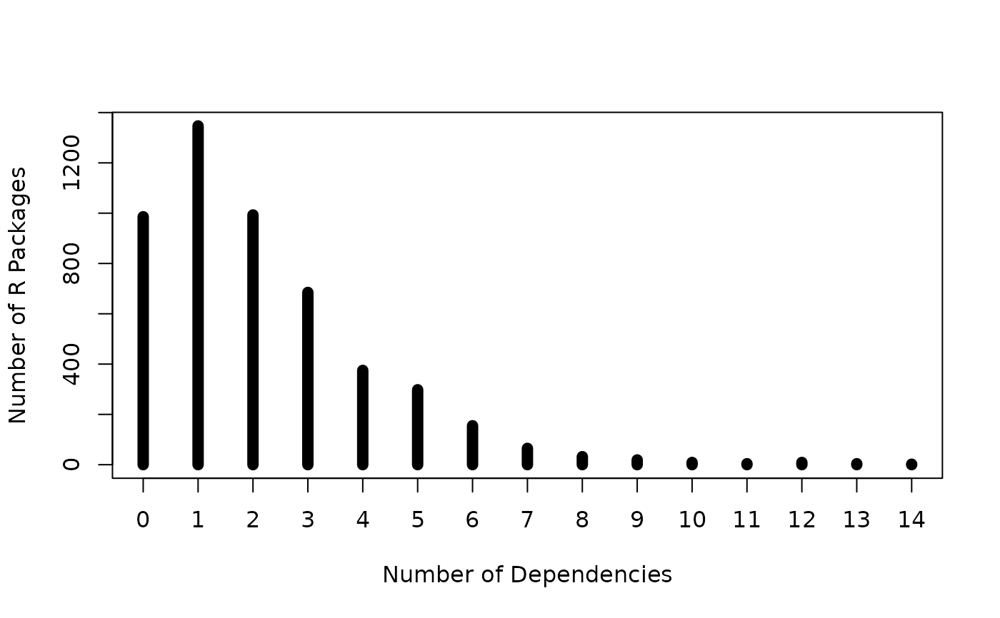
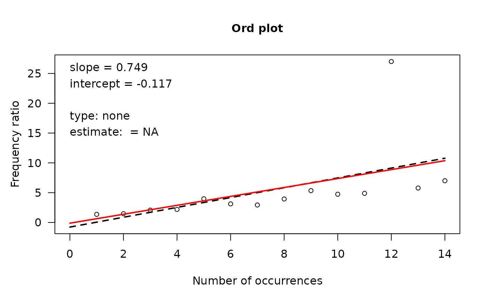

This one-way table gives the type-token distribution of the number of dependencies declared in 4983 packages listed on CRAN on January 17, 2014.
Format
The format is a one-way frequency table of counts of packages with 0, 1, 2, ... dependencies.
table' int [1:15(1d)] 986 1347 993 685 375 298 155 65 32 19 ...
- attr(*, "dimnames")=List of 1
..$ Depends: chr [1:15] "0" "1" "2" "3" ...
Source
Using code from https://www.r-bloggers.com/2013/12/a-look-at-the-distribution-of-r-package-dependencies/
Examples
data(Depends)
plot(Depends,
xlab="Number of Dependencies",
ylab="Number of R Packages",
lwd=8)

# what type of distribution?
# Ord_plot can't classify this!
Ord_plot(Depends)

if (FALSE) { # \dontrun{
# The code below, from Joseph Rickert, downloads and tabulates the data
p <- as.data.frame(available.packages(),stringsAsFactors=FALSE)
names(p)
pkgs <- data.frame(p[,c(1,4)]) # Pick out Package names and Depends
row.names(pkgs) <- NULL # Get rid of row names
pkgs <- pkgs[complete.cases(pkgs[,2]),] # Remove NAs
pkgs$Depends2 <-strsplit(pkgs$Depends,",") # split list of Depends
pkgs$numDepends <- as.numeric(lapply(pkgs$Depends2,length)) # Count number of dependencies in list
zeros <- c(rep(0,dim(p)[1] - dim(pkgs)[1])) # Account for packages with no dependencies
Deps <- as.vector(c(zeros,pkgs$numDepends)) # Set up to tablate
Depends <- table(Deps)
} # }